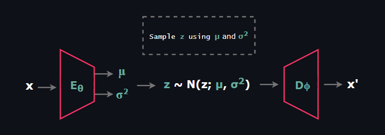
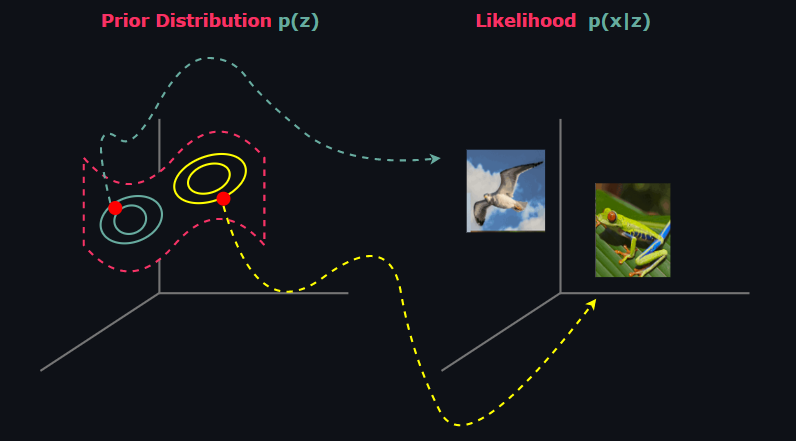

In this blog post we will explore Vector Quantized Variational Autoencoders that was first published by DeepMind in the paper named Neural Discrete Representation Learning. The model takes its root from Vector Quantization and applies the underlying idea to the encoder network so that it generates discrete latent code rather than continuous. The proposed architecture resembles with memory networks where encoder network extracts the features that are going to be used as an index for the memory (codebook in VQ-VAE terminology).
It is also important to note that, as opposed to traditional VAE architectures in which latent representations are assumed to be Gaussian Normal, VQ-VAE uses a learnt prior. The most obvious reason is that latent representations are not continous in this case but come from a categorical distribution. Nevertheless, we will start our discussion by reviewing Variational Autoencoders. For more detailed information please check out my article on VAEs.
Variational Autoencoder is a likelihood based latent variable model similar to flow and diffusion models that learns a mechanism from the given distribution to simulate new data points. VAEs consist of two stochastic component: Encoder and Decoder.

At this point before explaining Encoder and Decoder networks, it is important to mention primary stochastic components that constitutes VAE.
$$ \text{Prior Distribution } p_{\theta}(z)$$
$$ \text{Posterior Distribution } p_{\theta}(z|x)$$
$$ \text{Likelihood } p_{\theta}(x|z)$$
The prior is the distribution on the latent space Z that contains hidden representations z ∈ Zm, which is called latent vector or latent code, of the given datapoints x ∈ Xn . By the construction of VAEs, hidden representations z is assumed to lie on a low-dimensional manifold, i.e the dimensions satisfy m << n. Most importantly, prior distribution can be set fixed to a tractable distribution that we can take samples easily just like in ß-VAE and Conditional VAE or it can be learned just like in VQ-VAE and NVAE. When it is set fixed, the most common choice for prior is the Standard Normal Distribution.

The posterior is the distribution of latent vectors given observed data. Statistically it is untractable to form p(z|x). We can demonstrate this using Bayes rule as follow:
$$p(z|x) = \frac{p(x|z)p(z)}{p(x)} \tag{1}$$
Since latent variable models model the joint distribution p(x,z) rather than p(x), to obtain denominator we need to marginalize out z:
$$p(x) = \int_{z \in \mathbb{Z}} p(x|z)p(z)dz \tag{2}$$